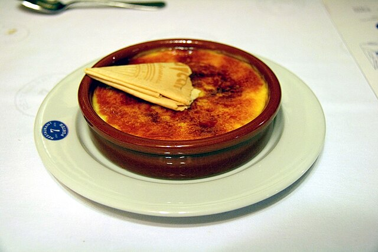

Crema catalana

La crema catalana és un dels postres més estimats de la nostra gastronomia, reconeguda pel seu sabor delicat i la seva textura cremosa. La base és una crema suau elaborada amb llet infusionada amb canyella i pell de llimona, que aporta un aroma fresc i característic. El toc final —la capa de sucre cremat— crea un contrast irresistible entre la suavitat de la crema i el cruixent del caramel.
Per aconseguir una crema catalana perfecta, és important escalfar la llet a foc lent perquè absorbeixi bé els aromes, i després integrar-hi els rovells i el sucre sense que arribin a quallar. La cocció ha de ser progressiva, remenant constantment fins que la crema espesseixi de manera uniforme. Un cop freda, només cal repartir una fina capa de sucre per sobre i cremar-la amb un bufador o pala metàl·lica fins que quedi daurada i cruixent.
Tot i ser un postre tradicional, la crema catalana admet variacions delicioses: pots aromatitzar-la amb taronja, afegir-hi un toc de vainilla o servir-la amb fruita fresca per donar-hi un contrast més lleuger. És ideal per tancar un àpat especial o per sorprendre convidats amb un clàssic que mai falla. Servida ben freda i acabada de caramel·litzar, és una autèntica celebració del sabor català.
